Foglio InputDati
Informazioni
generali
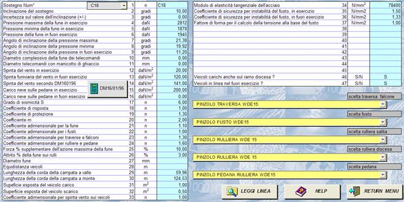
E’ la sezione del programma che va
compilata prima dell’effettuazione delle verifiche in quanto
contiene i parametri di riferimento per il calcolo. In linea generale il flusso delle operazioni da
compiere è il seguente:
Nel caso non si desideri
utilizzare in automatico i dati provenienti dal precedente calcolo di linea
memorizzato in un file secondo la struttura prevista dal “winsif”, si può
procedere in modo autonomo compilando manualmente tutta la sezione del foglio
excel di input dei dati.
Le fasi 3, 4, 5, vanno normalmente
eseguite.
Interfaccia per l’input dei dati
di calcolo
Questa sezione è composta da celle per l’assegnazione dei dati necessari alla verifica
dei sostegni e da una serie di controlli per l’esecuzione di comandi e la
scelta di elementi caratteristici del fusto, codificati in appositi database.
In particolare si evidenziano:
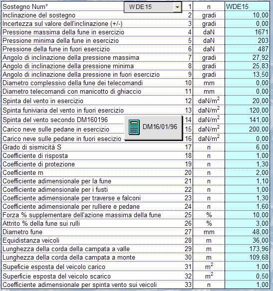
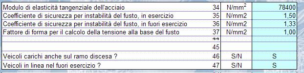
NB: questa sezione può
essere compilata manualmente ,impostando il valore di
ogni dato, oppure generata in automatico mediante lettura della linea
precedentemente calcolata con il modulo “monofune.xls” del software “winsif”
Generazione
automatica dei dati di input mediante lettura dal
modulo di calcolo della linea.
Questo
si ottiene attivando il pulsante
e quindi rispondendo alla richiesta di definire il modulo
di calcolo della linea dal quale si vuole leggere in automatico i dati che
servono alla verifica dei sostegni, ad esempio:
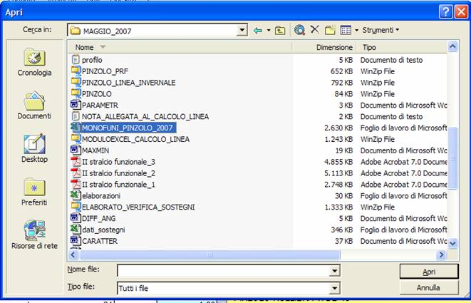
Questa operazione va fatta una
sola volta e rimane valida per la verifica di tutti i sostegni di questa linea.
Dal foglio di calcolo della linea vengono importati (
e depositati nel foglio “Link_Linea” ove sono
visibili per eventuale controllo) i
seguenti valori:
-
il profilo del terreno
-
la geometria della linea
-
il calcolo di linea relativo alla
condizione di fuori esercizio
-
il calcolo di linea relativo ai
massimi e minimi delle condizioni di carico a regime
-
le caratteristiche generali
dell’impianto
Per chiarire in modo esaustivo e
inequivocabile la natura dei dati letti in automatico dal calcolo di linea ed
utilizzati per la verifica dei sostegni, si precisano le condizioni minime da
rispettare per il calcolo di linea, e precisamente:
1.
devono essere eseguite le verifiche nelle
condizioni di impianto a regime con le ipotesi di
-
impianto fermo a veicoli vuoti o fune nuda
-
impianto a regime con veicoli carichi in
salita e vuoti in discesa
-
per impianti ad uso promiscuo si
considerano anche le ipotesi di veicoli carichi sulla salita e discesa, nonche veicoli vuoti sulla salita e carichi sulla discesa.
Si riporta un esempio di come
potrebbe presentarsi al maschera di controllo delle
condizioni verificate nel calcolo di
linea
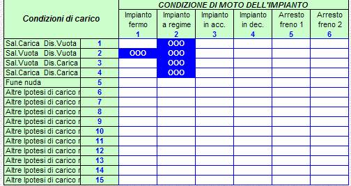
2.
Nell’esecuzione del calcolo di linea, prima della sua
archiviazione, devono essere generati i
tabulati relativi ai risultati del calcolo di linea
per quanto riguarda la condizione del fuori esercizio e la condizione
riassuntiva dei massimi e minimi. Deve inoltre essere generata la pagina
riassuntiva delle caratteristiche generali dell’impianto. In pratica devono
essere generati i tabulati dei foglio:
F08 – per la condizione di impianto in fuori esercizio
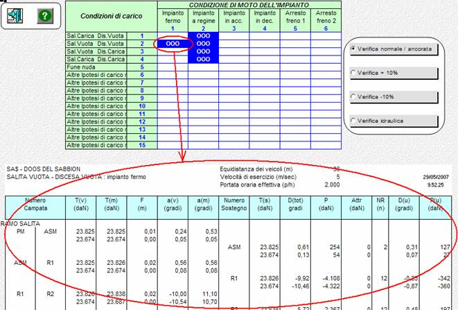
F10 –
tabulato dei massimi e minimi tra tutte le ipotesi di carico in linea a regime
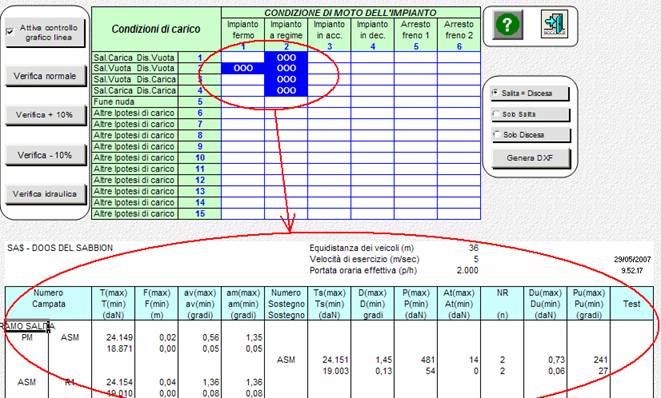
F12 – tabulato delle
caratteristiche generali
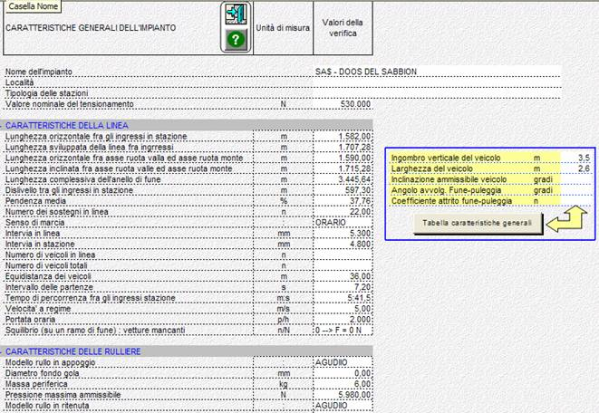
NB !!!:
i valori trasferiti in automatico al modulo di calcolo dei sostegni derivano
direttamente dai tre fogli sopra illustrati che devono quindi essere
correttamente generati !!!!!!!!!
Scelta
del sostegno da verificare
Compilata la maschera di dati di input si esegue la scelta del sostegno da verificare,
attivando il controllo :
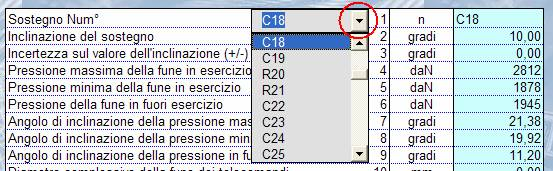
Con la scelta del sostegno vendono
automaticamente copiati (su conferma), direttamente nella maschera dei dati di input, i valori
del calcolo di linea che lo interessano ( geometria delle campate adiacenti,
pressioni, angoli di imbocco ecc).
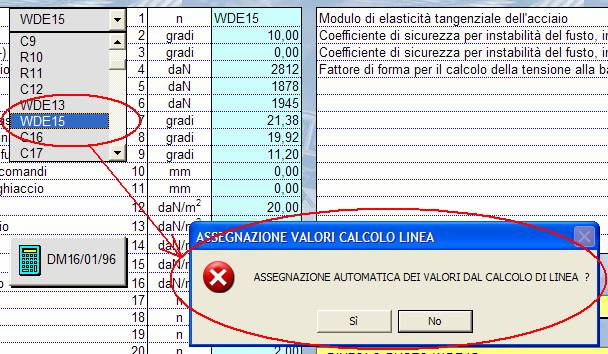
NB:
Nel caso non sia stata eseguita la
lettura della linea questa operazioni non produce
alcun effetto in quanto tutto l’input dei dati della maschera va eseguito
manualmente!
Assegnazione
delle caratteristiche del fusto
L’ultima
operazioni
di assegnazione dei dati di input prima della verifica riguarda la definizione
dei componenti caratteristici del sostegno, e precisamente:
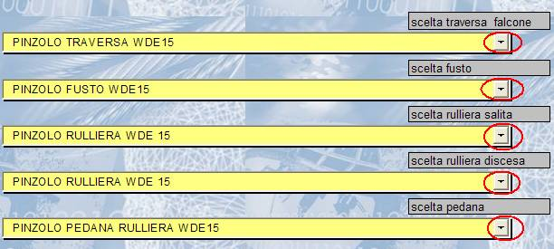
Per ogni componente
si apre la lista del database contenente le varie tipologie che possono essere
assegnate al sostegno. La gestione degli archivi componenti
è disponibile direttamente dal menu principale mediante attivazione di apposita
procedura per la loro generazione e
manutenzione!
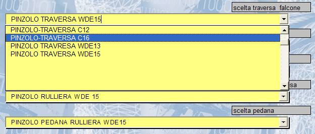
Azioni
del vento e della neve
E’ disponibile un pulsante per la
definizione dei carichi agenti sulle strutture civili secondo la normativa
italiana definita dal DM 16/01/96 (CARICHI SULLE COSTRUZIONI).
Per il suo utilizzo si rimanda
alla sezione dell’help specificatamente dedicata.